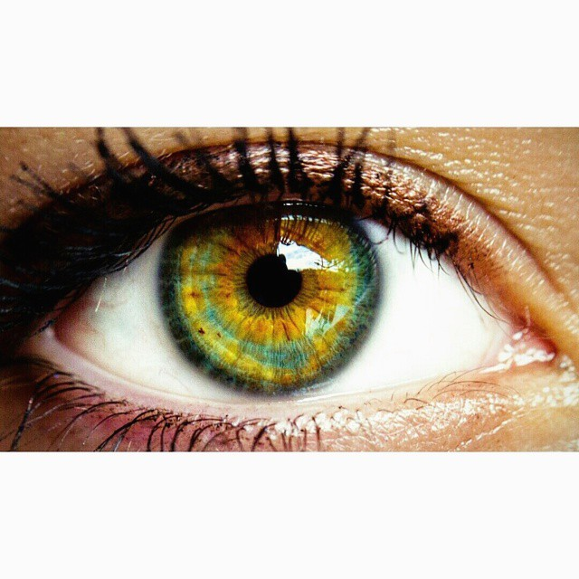

Famous Scenes
Alan Patrige

Easily his most iconic (and most hilarious) character, Steve Coogan’s Alan Partridge exists across film and television. He’s a miserable journalist who’s terrible at his job, but it leads to plenty of incredible goofs and memorable gags that make it all worth watching. The character has been around for nearly 30 years now, but there’s no end in sight for him (and no sign of him getting any better at his job, either).
24 Hour Party People

A true story about the origin of Factory Records and its impact on Manchester, UK’s music industry, Steve Coogan stars in 24 Hour Party People as real-life record mogul Tony Wilson. Over 15 years since its release and 40 since the events unfolded, the movie remains one of the greatest (and funniest) movies about the music industry ever made. It’s proof that, while Coogan might be a comedian first and foremost, he’s also a great actor.
The Trip Trilogy

Impossible to pinpoint which one is the greatest, Coogan and fellow comedian Rob Brydon star in a trilogy of films (that originated as a television series) called The Trip. Each around a couple hours each, the three films basically consist of two passive-aggressive friends spending time in beautiful places, eating good food, and picking on each other. They’re simple and accessible, but they’re so incredibly funny.
Philomena

Coogan’s most well-known dramatic role, Philomena sees the comedian playing a much better journalist than Alan Partridge. The movie is based on a true story, telling the tale of a woman on the search for her long lost child and the journalist who helps her along the way. He helped write the screenplay, which resulted in his first two Oscar nominations ever.
What Maisies Knew

A sharp and troubling film about a bitter custody battle, What Maisie Knew follows Coogan alongside Julianne Moore as two parents who recklessly remarry in an attempt to get a leg up on one another during court proceedings (leaving their seven-year-old daughter caught between the two of them). Coogan is doing a one-of-a-kind job here, taking risks with his character and proving himself to be plenty talented.
Coffee and Cigarettes

Written and directed by Jim Jarmusch, Coffee and Cigarettes tells many stories united by… well, coffee and cigarettes. Starring alongside Bill Murray, Tom Waits, Steve Buscemi, musicals Iggy Pop and RZA, even Cate Blanchett and Alfred Molina, Steve Coogan brings his signature sense of humor to the table and ends up leaving a memorable and lasting impression. It’s a pleasantly human film, just like much of Jarmusch’s other work, and Coogan is a welcome addition.
Marie Antoinette
From writer and director Sofia Coppola comes a reimagining of the famous life of France’s last Queen before their subsequent revolution. Coogan’s playing an ambassador and is put on the back burner in a supporting role, but it doesn’t matter — the film’s extravagance and the director’s soft style result in something really great (and something that Coogan should be proud to be a part of).
Ruby Sparks

From directors Jonathan Dayton and Valerie Faris and writer Zoe Kazan, Ruby Sparks is a quirky little film about a novelist who creates a female character that he ends up falling in love with. Coogan’s an important part of the story, often showing up with some really great lines. The 2010s saw Coogan settling into many independent American films, and Ruby Sparks is one of quite a few examples.
Stan and Ollie

From the writer of Philomena, Stan and Ollie sees Coogan embodying famous early 20th century comedian Stan Laurel alongside John C. Reilly as Oliver Hardy. The movie has gathered plenty of nominations for the actors’s great performances, so this is undoubtedly a role that Coogan should cherish. The actor really takes on the part with gusto, practically transforming into the comedian himself seamlessly.
Hot Fuzz

The second installment of Edgar Wright’s Cornetto Trilogy, Hot Fuzz is a send-up of all the great buddy cop movies of the 20th century. Wright always finds a way to include the best comedians in his films, even if they’re just doing a bit part. This is the case with Hot Fuzz: Coogan plays a Metropolitan Police Inspector, but anyone who’s seen the film knows that the part transcends its minimal screen time.